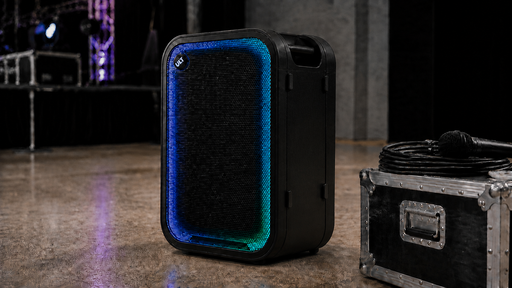

こんにちは、ろぶーです。今回は2026年9月18日発売予定の「ULT TOWER 7（SRS-ULT700）」を、ソニーの公式発表と製品仕様から見ていきます。僕はまだ実機の音を聴いていないため、使用感は断定せず、どんな場面に向くのかを具体的に考えます。
記事上部の画像はAI生成の編集用イメージです。実際の製品写真ではなく、外観・色・端子配置を正確に再現するものではありません。
先に結論
ULT TOWER 7は、「家のどこへでも気軽に持つ小型機」ではありません。ホームパーティー、ダンスや趣味の集まり、小規模イベント、店内BGM、マイクを使う司会など、人が集まる空間を一台でつくりたい人のための大型ポータブルスピーカーです。
背の高さは約71cm、重さは約22.8kg、公称最大出力は420W。バッテリーは所定条件で最長約30時間です。4つのハンドルと底面ホイールで同じフロア内を動かしやすくしていますが、階段や車への積み込みは別の話。音の迫力だけでなく、置き場所と移動経路まで含めて選ぶ製品だと思います。
「音楽を流す箱」より、会場をつくる道具
音の土台は、直径280mmの大型ウーファー1基、120mmのミッドレンジ2基、前面ツイーター2基、背面ツイーター2基。前だけに音を飛ばすのではなく、周囲へ広げる「360° Party Sound」を掲げています。
例えばリビングの壁際に置く日と、部屋の中央に置く日では、聞こえ方が変わります。本機は周囲の騒音や設置場所を見ながら音を調整し、縦置き・横置きの向きも検出して補正します。どこへ置いても同じとまでは言えませんが、毎回細かく設定し直す負担を減らす狙いは分かりやすいです。
ULT1、ULT2、FLAT、LIVEをどう使い分けるか
ULTボタンには、重低音を強める「ULT1」と、さらに力強い低音を狙う「ULT2」が割り当てられています。これに標準の「FLAT」、広がりを重視する「LIVE」を加え、音楽や場所に合わせて切り替えられます。LIVEはアプリ「Sony Sound Connect」から設定します。
普段のBGMはFLAT、屋外や広めの部屋で低音の存在感が欲しいときはULT1、ダンス系の曲をしっかり鳴らしたいときはULT2、ライブ音源や人が囲む場面ではLIVE、といった選び方が考えられます。ただし低音は壁や床を伝わりやすいため、集合住宅の夜間などは配慮が必要です。
使い道が見える、3つの場面
1. 家や庭で人が集まる日
友人を招いて音楽を流し、途中でマイクを使って案内や余興をする。そんな日は、音楽用スピーカーと簡易PAを別々に用意せず、一台へまとめられるのが便利です。ライティングも備えるため、夕方のテラスや室内パーティーでは雰囲気づくりにも使えます。
一方、IPX4相当は完全防水ではありません。条件は縦置きで防水カバーを正しく閉じた状態です。水しぶきに対する防滴性能であり、雨天で放置する道具ではないと考えるべきでしょう。
2. 店舗、地域の集まり、ダンス練習
店内BGM、小さな催し、地域の説明会、ダンス練習など、音量と持続時間の両方が欲しい場面にも合いそうです。最長約30時間のバッテリーなら、電源コードを人の通る場所へ引き回さずに済む可能性があります。
本体を縦置きにも横置きにもできるので、普段は壁際に縦置き、ステージ脇では横置き、と場所に合わせられます。ただし約421×710×347mmあるため、使わない時の収納場所は先に測っておきたいところです。
3. DJ、カラオケ、プレゼンテーション
Bluetoothだけでなく、XLR、RCA、USB-C、USB Type-A、6.3mmマイク入力を備えています。スマートフォンから音楽を流すだけでなく、DJ機器やプレーヤーを有線接続したり、マイクを使って司会や歌を入れたりできる構成です。
USB Type-Aは接続した機器への給電にも対応します。イベントの途中でスマートフォンの電池が減った時には助かります。必要なケーブルや接続相手との相性は、購入前に公式仕様と機器側の端子を確認した方が安心です。

AI生成のコンセプト画像です。実製品写真ではありません。公式写真を参考に、側面へ張り出すタイヤではなく、底面からわずかに見える細い小型ローラーとして表現しています。
主な仕様を整理
| 型名 | SRS-ULT700 |
|---|---|
| 発売予定日 | 2026年9月18日 |
| 価格 | オープン価格（ソニー公表の市場推定価格は税込85,000円前後） |
| 最大出力 | 420W |
| スピーカー構成 | 280mmウーファー×1、120mmミッドレンジ×2、前面ツイーター×2、背面ツイーター×2 |
| サウンドモード | ULT1、ULT2、FLAT、LIVE |
| 連続再生 | 最長約30時間（ULT1/ULT2、音量17、ライティング消灯など所定条件） |
| クイック充電 | 約10分の充電で約180分再生（所定条件） |
| 満充電時間 | 約3時間 |
| 主な接続 | Bluetooth 5.3、XLR、RCA、USB-C、USB Type-A、マイク入力 |
| 外形寸法 | 約421×710×347mm |
| 質量 | 約22.8kg |
| 防滴 | IPX4相当（縦置き・防水カバーを閉じた状態） |
30時間再生は頼もしい。でも条件を読む
最長約30時間という数字は魅力的です。ただしソニーが示す測定条件には、ULT1またはULT2、音量17、ライティング消灯などが含まれます。音量、温度、使う機能によって実際の時間は変わるため、「どんな使い方でも30時間」と受け取らない方が安全です。
約10分の充電で約180分再生できるクイック充電は、出発前に充電忘れへ気づいた時に実用的です。満充電の目安は約3時間。イベント前日は満充電、当日に足りなければクイック充電、と考えると使い方が見えてきます。
底面ホイールはある。でも22.8kgは軽くない
本体には四隅のキャリーハンドルがあり、下部のホイールを使って床の上を転がせます。公式写真ではホイールの見える部分が筐体の底面に収まっています。一方、ソニーは従来機「SRS-XV800」と比べてホイールのサイズと幅を広げ、移動時の安定性を高めたと説明しています。
平らな床で場所を変えるには便利でも、段差を越える時や車へ載せる時は22.8kgを持ち上げる必要があります。一人で頻繁に階段を移動する人には向きにくく、常設に近い使い方か、二人で運べる場面の方が現実的です。
「ポータブル」という言葉だけで判断せず、玄関の段差、廊下の幅、収納場所、車の荷室まで一度測っておく。ここは音質と同じくらい大切な確認点です。
最大100台のParty Chainは、誰に必要か
Auracastを使う「Party Chain」は、対応するソニー製スピーカーを最大100台まで無線接続できると案内されています。複数の場所へ同じ音を届けたいイベントや、広い会場では面白い機能です。
ただし、2026年9月2日時点で案内されている対応機種はULT TOWER 7です。100台という数字だけでなく、同じ対応機種を何台用意するのか、電波環境はどうか、会場の運用をどうするかまで考える必要があります。一般家庭なら、まず一台で十分かを確かめる方が現実的でしょう。
オープン価格。目安は85,000円前後
製品の価格はオープン価格です。ソニーは発売前の市場推定価格を税込85,000円前後と案内していますが、これは販売価格を保証する数字ではなく、実際の価格は各販売店が決めます。小型Bluetoothスピーカーの感覚で見ると高価ですが、大型スピーカー、バッテリー、マイク入力、各種有線端子、ライティング、簡易PA的な用途を一台にまとめると考えれば、比較相手が変わります。
家でたまに音楽を聴くだけなら過剰です。反対に、店や教室、地域の催しで何度も使う人なら、機材を毎回借りたり複数台を用意したりする手間と比べる価値があります。買う理由は「420Wが欲しい」より、「一台で片づけたい場面が何度あるか」で考えると分かりやすいです。
向いていそうな人、見送ってよさそうな人
- 自宅、店、教室、地域イベントなどで人が集まる機会が多い
- 音楽だけでなく、マイク、司会、歌、簡単なイベント運営にも使いたい
- 電源のない場所でも長時間使いたい
- 収納場所があり、平らな床を中心に移動できる
- 大型機を一台にまとめる価値を感じる
逆に、寝室や机の上で静かに聴きたい人、毎回階段を上り下りする人、収納場所が限られる人には大きすぎる可能性があります。近所への低音が気になる住環境なら、能力を使い切れないこともありそうです。
ろぶーのまとめ
ULT TOWER 7は、持ち運べるスピーカーというより、電源から離しても会場をつくれる音響機器と考えると分かりやすい一台です。
420W、30時間再生、360° Party Sound、豊富な端子は魅力的。でも、買う前に見るべきなのは22.8kgを置ける場所と、実際に使う予定が何回あるかです。使い道が先に見えている人には頼もしい道具になりそうですが、用途がまだ曖昧なら実機の大きさを店頭で確かめてからでも遅くありません。
僕なら実機を見る時、最大音量よりも、小さな音量で聴きやすいか、持ち手をつかみやすいか、小型ホイールが床の段差でどう動くかを確かめます。この三つが納得できれば、「大きいだけ」ではなく、暮らしや仕事で使える一台になると思います。
確認した公式情報
- ソニー：ワイヤレスポータブルスピーカー「ULT TOWER 7」発売
- ソニー：ULT TOWER 7 製品情報
- ソニー：ULT TOWER 7 主な仕様
- ソニーストア：ULT TOWER 7 購入ページ
情報確認日：2026年9月5日（日本時間）。本稿は実機レビューではなく、公開日時点の公式情報をもとに構成しています。販売価格や提供条件は変更される場合があります。